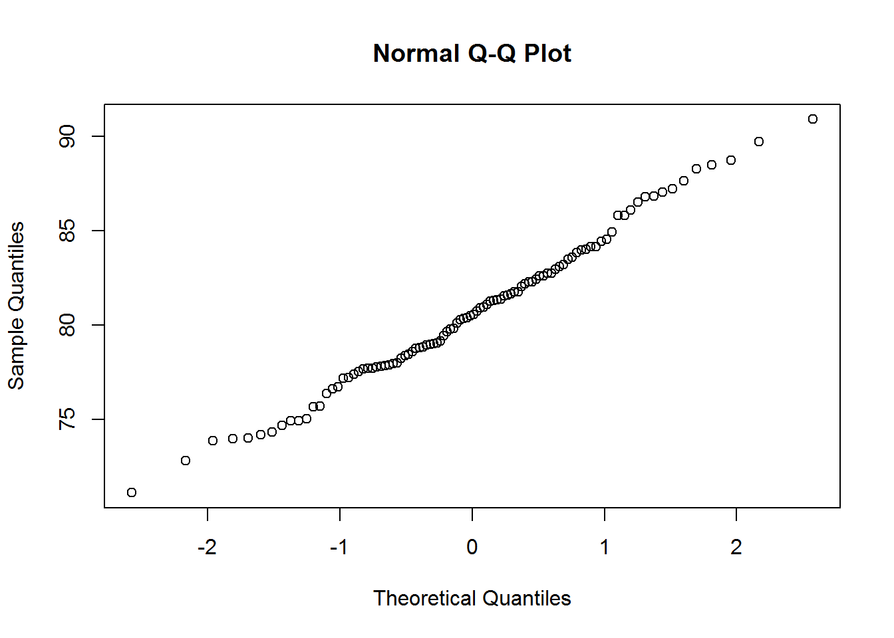
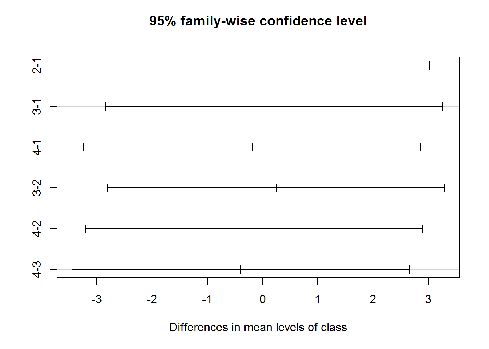

Chapter 5 Covariation
While the variation describes the behaviors within a variable, covariation describes the behavior between variables.
Covariation is the tendency for the values of two or more variables to vary together in a related way.
5.1 Two categorical variables
5.1.1 Contingency table
To characterize covaritation of two categorical variable, we can use contingency table to display the frequency.
table(diamonds$cut, diamonds$color)##
## D E F G H I J
## Fair 163 224 312 314 303 175 119
## Good 662 933 909 871 702 522 307
## Very Good 1513 2400 2164 2299 1824 1204 678
## Premium 1603 2337 2331 2924 2360 1428 808
## Ideal 2834 3903 3826 4884 3115 2093 896table(diamonds$cut, diamonds$color, diamonds$clarity)## , , = I1
##
##
## D E F G H I J
## Fair 4 9 35 53 52 34 23
## Good 8 23 19 19 14 9 4
## Very Good 5 22 13 16 12 8 8
## Premium 12 30 34 46 46 24 13
## Ideal 13 18 42 16 38 17 2
##
## , , = SI2
##
##
## D E F G H I J
## Fair 56 78 89 80 91 45 27
## Good 223 202 201 163 158 81 53
## Very Good 314 445 343 327 343 200 128
## Premium 421 519 523 492 521 312 161
## Ideal 356 469 453 486 450 274 110
##
## , , = SI1
##
##
## D E F G H I J
## Fair 58 65 83 69 75 30 28
## Good 237 355 273 207 235 165 88
## Very Good 494 626 559 474 547 358 182
## Premium 556 614 608 566 655 367 209
## Ideal 738 766 608 660 763 504 243
##
## , , = VS2
##
##
## D E F G H I J
## Fair 25 42 53 45 41 32 23
## Good 104 160 184 192 138 110 90
## Very Good 309 503 466 479 376 274 184
## Premium 339 629 619 721 532 315 202
## Ideal 920 1136 879 910 556 438 232
##
## , , = VS1
##
##
## D E F G H I J
## Fair 5 14 33 45 32 25 16
## Good 43 89 132 152 77 103 52
## Very Good 175 293 293 432 257 205 120
## Premium 131 292 290 566 336 221 153
## Ideal 351 593 616 953 467 408 201
##
## , , = VVS2
##
##
## D E F G H I J
## Fair 9 13 10 17 11 8 1
## Good 25 52 50 75 45 26 13
## Very Good 141 298 249 302 145 71 29
## Premium 94 121 146 275 118 82 34
## Ideal 284 507 520 774 289 178 54
##
## , , = VVS1
##
##
## D E F G H I J
## Fair 3 3 5 3 1 1 1
## Good 13 43 35 41 31 22 1
## Very Good 52 170 174 190 115 69 19
## Premium 40 105 80 171 112 84 24
## Ideal 144 335 440 594 326 179 29
##
## , , = IF
##
##
## D E F G H I J
## Fair 3 0 4 2 0 0 0
## Good 9 9 15 22 4 6 6
## Very Good 23 43 67 79 29 19 8
## Premium 10 27 31 87 40 23 12
## Ideal 28 79 268 491 226 95 25xtabs(~ cut + color, diamonds)## color
## cut D E F G H I J
## Fair 163 224 312 314 303 175 119
## Good 662 933 909 871 702 522 307
## Very Good 1513 2400 2164 2299 1824 1204 678
## Premium 1603 2337 2331 2924 2360 1428 808
## Ideal 2834 3903 3826 4884 3115 2093 896xtabs(~ cut + color + clarity, diamonds)## , , clarity = I1
##
## color
## cut D E F G H I J
## Fair 4 9 35 53 52 34 23
## Good 8 23 19 19 14 9 4
## Very Good 5 22 13 16 12 8 8
## Premium 12 30 34 46 46 24 13
## Ideal 13 18 42 16 38 17 2
##
## , , clarity = SI2
##
## color
## cut D E F G H I J
## Fair 56 78 89 80 91 45 27
## Good 223 202 201 163 158 81 53
## Very Good 314 445 343 327 343 200 128
## Premium 421 519 523 492 521 312 161
## Ideal 356 469 453 486 450 274 110
##
## , , clarity = SI1
##
## color
## cut D E F G H I J
## Fair 58 65 83 69 75 30 28
## Good 237 355 273 207 235 165 88
## Very Good 494 626 559 474 547 358 182
## Premium 556 614 608 566 655 367 209
## Ideal 738 766 608 660 763 504 243
##
## , , clarity = VS2
##
## color
## cut D E F G H I J
## Fair 25 42 53 45 41 32 23
## Good 104 160 184 192 138 110 90
## Very Good 309 503 466 479 376 274 184
## Premium 339 629 619 721 532 315 202
## Ideal 920 1136 879 910 556 438 232
##
## , , clarity = VS1
##
## color
## cut D E F G H I J
## Fair 5 14 33 45 32 25 16
## Good 43 89 132 152 77 103 52
## Very Good 175 293 293 432 257 205 120
## Premium 131 292 290 566 336 221 153
## Ideal 351 593 616 953 467 408 201
##
## , , clarity = VVS2
##
## color
## cut D E F G H I J
## Fair 9 13 10 17 11 8 1
## Good 25 52 50 75 45 26 13
## Very Good 141 298 249 302 145 71 29
## Premium 94 121 146 275 118 82 34
## Ideal 284 507 520 774 289 178 54
##
## , , clarity = VVS1
##
## color
## cut D E F G H I J
## Fair 3 3 5 3 1 1 1
## Good 13 43 35 41 31 22 1
## Very Good 52 170 174 190 115 69 19
## Premium 40 105 80 171 112 84 24
## Ideal 144 335 440 594 326 179 29
##
## , , clarity = IF
##
## color
## cut D E F G H I J
## Fair 3 0 4 2 0 0 0
## Good 9 9 15 22 4 6 6
## Very Good 23 43 67 79 29 19 8
## Premium 10 27 31 87 40 23 12
## Ideal 28 79 268 491 226 95 25ftable(xtabs(~ cut + color + clarity, diamonds))## clarity I1 SI2 SI1 VS2 VS1 VVS2 VVS1 IF
## cut color
## Fair D 4 56 58 25 5 9 3 3
## E 9 78 65 42 14 13 3 0
## F 35 89 83 53 33 10 5 4
## G 53 80 69 45 45 17 3 2
## H 52 91 75 41 32 11 1 0
## I 34 45 30 32 25 8 1 0
## J 23 27 28 23 16 1 1 0
## Good D 8 223 237 104 43 25 13 9
## E 23 202 355 160 89 52 43 9
## F 19 201 273 184 132 50 35 15
## G 19 163 207 192 152 75 41 22
## H 14 158 235 138 77 45 31 4
## I 9 81 165 110 103 26 22 6
## J 4 53 88 90 52 13 1 6
## Very Good D 5 314 494 309 175 141 52 23
## E 22 445 626 503 293 298 170 43
## F 13 343 559 466 293 249 174 67
## G 16 327 474 479 432 302 190 79
## H 12 343 547 376 257 145 115 29
## I 8 200 358 274 205 71 69 19
## J 8 128 182 184 120 29 19 8
## Premium D 12 421 556 339 131 94 40 10
## E 30 519 614 629 292 121 105 27
## F 34 523 608 619 290 146 80 31
## G 46 492 566 721 566 275 171 87
## H 46 521 655 532 336 118 112 40
## I 24 312 367 315 221 82 84 23
## J 13 161 209 202 153 34 24 12
## Ideal D 13 356 738 920 351 284 144 28
## E 18 469 766 1136 593 507 335 79
## F 42 453 608 879 616 520 440 268
## G 16 486 660 910 953 774 594 491
## H 38 450 763 556 467 289 326 226
## I 17 274 504 438 408 178 179 95
## J 2 110 243 232 201 54 29 25diamonds %>%
group_by(cut, color)%>%
count( )%>%
group_by(cut)%>%
mutate(sum = sum(n))%>%
mutate(proportion = n/sum,
percentage = (n/sum)*100)## # A tibble: 35 x 6
## # Groups: cut [5]
## cut color n sum proportion percentage
## <ord> <ord> <int> <int> <dbl> <dbl>
## 1 Fair D 163 1610 0.101 10.1
## 2 Fair E 224 1610 0.139 13.9
## 3 Fair F 312 1610 0.194 19.4
## 4 Fair G 314 1610 0.195 19.5
## 5 Fair H 303 1610 0.188 18.8
## 6 Fair I 175 1610 0.109 10.9
## 7 Fair J 119 1610 0.0739 7.39
## 8 Good D 662 4906 0.135 13.5
## 9 Good E 933 4906 0.190 19.0
## 10 Good F 909 4906 0.185 18.5
## # ... with 25 more rows5.1.2 Tile plot
You can visualize the frequency table with a tile plot.
diamonds%>%
count(color, cut)%>%
ggplot(aes(color, cut))+
geom_tile(aes(fill=n))ggplot(diamonds)+
geom_count(aes(cut, color))#install.packages("seriation")5.2 Categorical + continuous variable
The covariation of a categorical and a continuous variable can be visualized and explored by treating the categorical variable as the group factor. Then we can apply all the methods we learned when dealing with a continuous variable.
5.2.1 Summary table
R offers a number of ways we can summarize the mean, sd of a continous variable as a function of one or more grouping variables.
# solution 1
with(diamonds, tapply(price, cut, mean))## Fair Good Very Good Premium Ideal
## 4358.758 3928.864 3981.760 4584.258 3457.542with(diamonds, tapply(price, list(cut, color, clarity), mean))## , , I1
##
## D E F G H I J
## Fair 7383.000 2095.222 2543.514 3187.472 4212.962 3501.000 5795.043
## Good 3490.750 4398.130 2569.526 3195.789 3849.714 4175.444 3794.500
## Very Good 2622.800 3443.545 4252.923 3194.812 5258.833 6045.125 4478.375
## Premium 3818.750 3199.267 3554.559 4051.522 3904.348 5044.625 4577.231
## Ideal 3526.923 3559.389 3903.452 4044.438 5415.184 4103.294 9454.000
##
## , , SI2
##
## D E F G H I J
## Fair 4355.143 4172.385 4520.112 5665.150 6022.407 6658.022 5131.815
## Good 3595.296 3785.490 4426.786 4776.411 5529.778 6933.012 5306.113
## Very Good 4425.459 4279.447 4249.758 4699.269 6112.414 6621.600 5992.898
## Premium 4351.086 4489.931 4747.090 5617.205 6718.946 7148.484 7550.286
## Ideal 3142.048 3891.303 4335.508 4612.086 5589.473 7191.912 6555.173
##
## , , SI1
##
## D E F G H I J
## Fair 4273.345 3901.154 3784.687 3579.362 5195.800 4574.967 4553.929
## Good 3021.173 3162.132 3261.454 4129.329 4179.285 4742.945 4627.625
## Very Good 3234.931 3228.176 3574.292 3481.871 4933.945 5195.302 5026.544
## Premium 3236.378 3362.625 4040.467 4303.348 5707.722 6092.093 5726.579
## Ideal 2490.459 2883.808 3710.322 3441.108 4769.988 5178.565 5115.675
##
## , , VS2
##
## D E F G H I J
## Fair 4512.880 3041.714 3400.472 5384.444 5110.927 3856.125 4067.826
## Good 3588.462 3772.019 3790.543 4140.714 4433.043 5956.564 4803.167
## Very Good 3145.194 3329.497 3995.944 4426.816 4620.221 5754.642 5325.549
## Premium 2919.357 3070.394 4221.467 4556.255 5553.876 7156.346 6175.559
## Ideal 2111.927 2163.324 3317.205 4310.035 4039.126 4663.384 4867.134
##
## , , VS1
##
## D E F G H I J
## Fair 2921.200 3307.929 4103.061 3497.622 4604.750 4500.480 5906.188
## Good 3556.581 3712.775 2787.508 4302.428 3819.117 4597.165 3662.827
## Very Good 2955.480 3089.358 3880.802 3770.150 3750.198 5276.971 4339.592
## Premium 4178.046 3721.695 4758.038 4435.823 3949.336 5339.367 5817.261
## Ideal 2576.040 2175.798 3504.002 4116.918 3613.325 3944.422 4734.428
##
## , , VVS2
##
## D E F G H I J
## Fair 3607.000 3119.308 4018.200 3099.059 3481.727 2994.625 2998.000
## Good 2345.640 3390.154 3192.360 3310.467 2428.000 2758.000 4371.154
## Very Good 2615.298 2041.685 3461.912 3711.785 2768.145 3059.887 5960.448
## Premium 3888.436 2940.942 4099.466 4323.571 2651.263 3190.768 6423.353
## Ideal 3619.014 2556.335 3323.629 3795.651 2591.156 2858.680 4121.926
##
## , , VVS1
##
## D E F G H I J
## Fair 4473.000 4115.333 4679.800 2216.333 4115.000 4194.000 1691.000
## Good 2586.231 1905.953 2189.514 2705.195 1719.710 2650.955 4633.000
## Very Good 2987.731 1997.447 2826.540 2719.332 2042.191 2056.420 3175.526
## Premium 3771.000 2699.857 3969.325 2933.655 1453.759 1831.083 7244.375
## Ideal 2705.778 2205.519 2611.234 2909.199 1915.985 2034.397 2000.172
##
## , , IF
##
## D E F G H I J
## Fair 1619.667 NA 2344.000 1488.000 NA NA NA
## Good 10030.333 1519.222 3132.867 4060.136 5948.750 1749.333 2738.000
## Very Good 10298.261 4332.744 4677.075 3525.241 2647.690 4093.895 1074.125
## Premium 9056.500 4525.444 3617.581 3311.115 3384.750 2358.565 7026.000
## Ideal 6567.179 3258.937 2153.709 2206.031 1982.765 1502.621 2489.000# solution 2
# install.packages("doBy")
library(doBy)
data = as.data.frame(diamonds)
head(summaryBy(price ~ cut + clarity + color , data = data, FUN = mean))## cut clarity color price.mean
## 1 Fair I1 D 7383.000
## 2 Fair I1 E 2095.222
## 3 Fair I1 F 2543.514
## 4 Fair I1 G 3187.472
## 5 Fair I1 H 4212.962
## 6 Fair I1 I 3501.000head(summaryBy(price + carat ~ cut + clarity + color , data = data, FUN = mean))## cut clarity color price.mean carat.mean
## 1 Fair I1 D 7383.000 1.8775000
## 2 Fair I1 E 2095.222 0.9688889
## 3 Fair I1 F 2543.514 1.0234286
## 4 Fair I1 G 3187.472 1.2264151
## 5 Fair I1 H 4212.962 1.4986538
## 6 Fair I1 I 3501.000 1.3229412head(summaryBy(price + carat ~ cut + color , data = data, FUN = c(mean, sd)))## cut color price.mean carat.mean price.sd carat.sd
## 1 Fair D 4291.061 0.9201227 3286.114 0.4054185
## 2 Fair E 3682.312 0.8566071 2976.652 0.3645848
## 3 Fair F 3827.003 0.9047115 3223.303 0.4188899
## 4 Fair G 4239.255 1.0238217 3609.644 0.4927241
## 5 Fair H 5135.683 1.2191749 3886.482 0.5482389
## 6 Fair I 4685.446 1.1980571 3730.271 0.5219776# solution 3
diamonds%>%
group_by(cut, clarity, color)%>%
summarise(mean = mean(price),
sd = sd(price))## # A tibble: 276 x 5
## # Groups: cut, clarity [40]
## cut clarity color mean sd
## <ord> <ord> <ord> <dbl> <dbl>
## 1 Fair I1 D 7383 5899.
## 2 Fair I1 E 2095. 824.
## 3 Fair I1 F 2544. 2227.
## 4 Fair I1 G 3187. 2598.
## 5 Fair I1 H 4213. 3149.
## 6 Fair I1 I 3501 2157.
## 7 Fair I1 J 5795. 4594.
## 8 Fair SI2 D 4355. 3260.
## 9 Fair SI2 E 4172. 3055.
## 10 Fair SI2 F 4520. 3627.
## # ... with 266 more rows5.2.2 Central tendency (mean): Bar plots
#bar plot
diamonds%>%
group_by(cut)%>%
summarise(mean = mean(price))%>%
ggplot(aes(cut, mean))+
geom_bar(stat="identity")
diamonds%>%
group_by(cut)%>%
summarise(mean = mean(price))%>%
ggplot(aes(cut, mean, fill = cut))+
geom_bar(stat="identity")
# xlim(4, 10) + ylim(4, 10)
diamonds%>%
group_by(cut)%>%
summarise(mean = mean(price),
sd = sd(price))%>%
ggplot(aes(cut, mean))+
geom_bar(stat="identity")+
geom_errorbar(aes(ymin = mean - sd,
ymax = mean + sd),
width = .2, size = 0.7, position = position_dodge(.9)) ### Spread: boxplot
# boxplot
ggplot(diamonds, aes(cut, price))+
geom_boxplot()
5.2.3 Distribution: density plot
We can color-code the density plot to represent the group factor.
library(tidyverse)
ggplot(diamonds, aes(price))+
geom_freqpoly(binwidth = 500)
ggplot(diamonds, aes(price))+
geom_freqpoly(aes(color = cut), binwidth = 500)# standardized count where the area under each frequency polygon is one
ggplot(diamonds, aes(x = price, y = ..density..))+
geom_freqpoly(aes(color = cut), binwidth = 500)model = model name
displ = engine displacement, in litres
year = year of manufacture
cyl = number of cylinders
trans = type of transmission
drv => f = front-wheel drive, r = rear wheel drive, 4 = 4wd
cty = city miles per gallon
hwy = highway miles per gallon
fl = fuel type
class = “type” of car
summary(mpg)## manufacturer model displ year
## Length:234 Length:234 Min. :1.600 Min. :1999
## Class :character Class :character 1st Qu.:2.400 1st Qu.:1999
## Mode :character Mode :character Median :3.300 Median :2004
## Mean :3.472 Mean :2004
## 3rd Qu.:4.600 3rd Qu.:2008
## Max. :7.000 Max. :2008
## cyl trans drv cty
## Min. :4.000 Length:234 Length:234 Min. : 9.00
## 1st Qu.:4.000 Class :character Class :character 1st Qu.:14.00
## Median :6.000 Mode :character Mode :character Median :17.00
## Mean :5.889 Mean :16.86
## 3rd Qu.:8.000 3rd Qu.:19.00
## Max. :8.000 Max. :35.00
## hwy fl class
## Min. :12.00 Length:234 Length:234
## 1st Qu.:18.00 Class :character Class :character
## Median :24.00 Mode :character Mode :character
## Mean :23.44
## 3rd Qu.:27.00
## Max. :44.00ggplot(mpg)+
geom_boxplot(aes(x = reorder(class, hwy, FUN = median), y = hwy))ggplot(mpg)+
geom_boxplot(aes(x = reorder(class, hwy, FUN = median), y = hwy))+
coord_flip()5.3 Two continuous variables
5.3.1 Scatter plots
The most common way we visualize two continuous variables is by using a scatter plot.
ggplot(diamonds)+
geom_point(aes(carat, price))# add transparency
ggplot(diamonds)+
geom_point(aes(carat, price), alpha = 1/100)
# bin two variables
ggplot(diamonds)+
geom_bin2d(aes(carat, price))
#install.packages("hexbin")
ggplot(diamonds)+
geom_hex(aes(carat, price))
#bin one variable
ggplot(diamonds,aes(carat, price))+
geom_boxplot(aes(group = cut_width(carat, 0.1)))
ggplot(diamonds,aes(carat, price))+
geom_boxplot(aes(group = cut_width(carat, 0.5))) ### Bin one or both continuous variables
### Bin one or both continuous variables
Sometime we can bin one or both continuous variables to convert them into categorical variable(s). In those cases, we apply what we learn in dealing with categorical variables, such as tile plots or boxplots.
#bin one variable
ggplot(diamonds,aes(carat, price))+
geom_boxplot(aes(group = cut_width(carat, 0.1)))
ggplot(diamonds,aes(carat, price))+
geom_boxplot(aes(group = cut_width(carat, 0.5)))# bin two variables
ggplot(diamonds)+
geom_bin2d(aes(carat, price))
#install.packages("hexbin")
ggplot(diamonds)+
geom_hex(aes(carat, price))